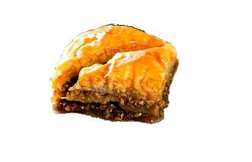

This is a simple and user-friendly website designed for Enerjy, a Mediterranean restaurant local to Rhode Island. The goal is to provide an interface to find the nearest stores offering Enerjy's products. Users can expect the website to use their location to determine stores nearest to them.
Use the navigation bar above to explore our site. More content will be added as time progresses.
Author: Robert Oganesian
Email: roganesian@uri.edu